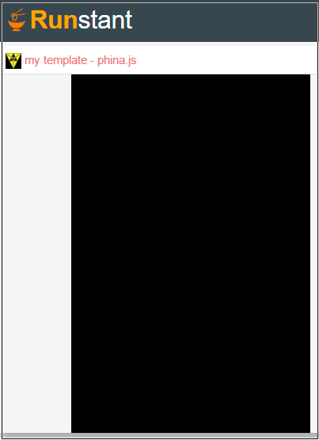

phina.jsのテンプレート
- phina.jsのプログラムの基本形は以下のとおりです。実行結果は黒い画面が表示されるだけです。
- 今後の説明で、コードはrunstantの Script(javascript) タブへの入力を前提とします。

サンプルコード
// グローバルに展開
phina.globalize();
/*
* メインシーン
*/
phina.define("MainScene", {
// 継承
superClass: 'DisplayScene',
// 初期化
init: function() {
// 親クラス初期化
this.superInit();
// 背景色
this.backgroundColor = 'black';
// 以下にコードを書いていく
},
// 毎フレーム更新処理
update: function() {
// 以下にコードを書いていく
},
});
/*
* メイン処理
*/
phina.main(function() {
// アプリケーションを生成
var app = GameApp({
// MainScene から開始
startLabel: 'main',
});
// fps表示
//app.enableStats();
// 実行
app.run();
});
コード説明
MainScene
- 基本的には、MainScene の init 関数内に自分のコードを書いていきます。
- this.backgroundColorで背景色を指定しないと、デフォルトでは白になります。
update
MainSceneのupadate関数内には、オブジェクトの移動など毎フレーム更新したい処理を書いていきます。
main
- 関数内の GameApp 関数では、startLabel で最初に開始するシーンを指定できます。何も指定しないとタイトルシーンになりますが、main を指定することでタイトル画面をスキップできます。
- enableStats関数は、画面左上にfpsを常時表示できる便利な機能ですが、処理が重くなるので一旦コメントアウトしています。